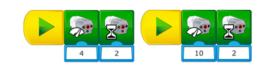

Create a Program to Make the Robot Move
This program will enable your students to understand the behaviour of the robot. Allow some time for exploration and tinkering as your students become familiar with the robot’s movements.
Programming Help
Understanding the Link between Speed and Time
To control the robot’s movement, it is important to understand the relationship between motor power and time. For example, if the time stays the same, the robot will go farther if the power level is set to 10 instead of 4.

Enabling the students to understand a concept (Abstraction)
Abstraction is the main skill that is being developed during this phase. Therefore, the focus is on enabling your students to remove unimportant details in order to explain a problem or a solution.
To help your students focus on the important details, have them:
Explain what the robot can do and how to program it, and then describe its characteristics.
Explain something that the robot can do which will not help in solving this problem.
Explain what the robot cannot do.